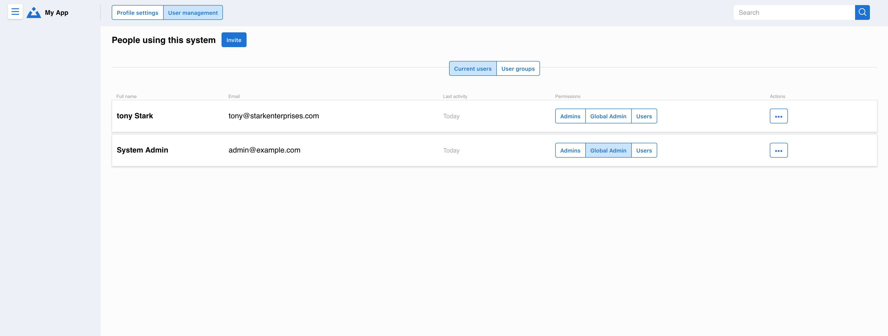

User Management
The User Management feature allows administrators to oversee team members, organize users into groups, and control access permissions across the platform.
Key Capabilities
- User Administration
View all platform users and their status
Invite new team members via email
Manage user roles and permissions
Deactivate or remove users when needed
- Permission Groups
Create custom permission groups for different roles
Assign specific platform access levels
Manage group memberships
Set default permissions for new users
- Team Organization
Organize users by department or project
Assign team leads and administrators
Control cross-team collaboration settings
User Interface
The main user management interface shows:
Complete user directory with status indicators
Quick actions for common administrative tasks
Search and filter capabilities for large teams
Bulk operations for efficient management
The group management section allows:
Creation and editing of permission groups
Visual assignment of users to groups
Permission level configuration
Group-based access control
Getting Started
For Administrators:
Access User Management: Navigate to Settings → User Management
Review Current Users: Check the user directory and verify active accounts
Set Up Groups: Create permission groups that match your organization structure
Invite Team Members: Use the invite feature to add new users
Assign Permissions: Add users to appropriate groups based on their roles
For Team Leads:
Request administrator access if you need to manage your team
Review your team members’ access levels
Coordinate with administrators for permission changes
Note
User management features may be limited based on your role. Contact your system administrator if you need additional permissions.
Best Practices
Regular Audits: Review user access quarterly
Principle of Least Privilege: Give users only the access they need
Group Organization: Use clear, descriptive names for permission groups
Onboarding Process: Establish consistent procedures for new user setup